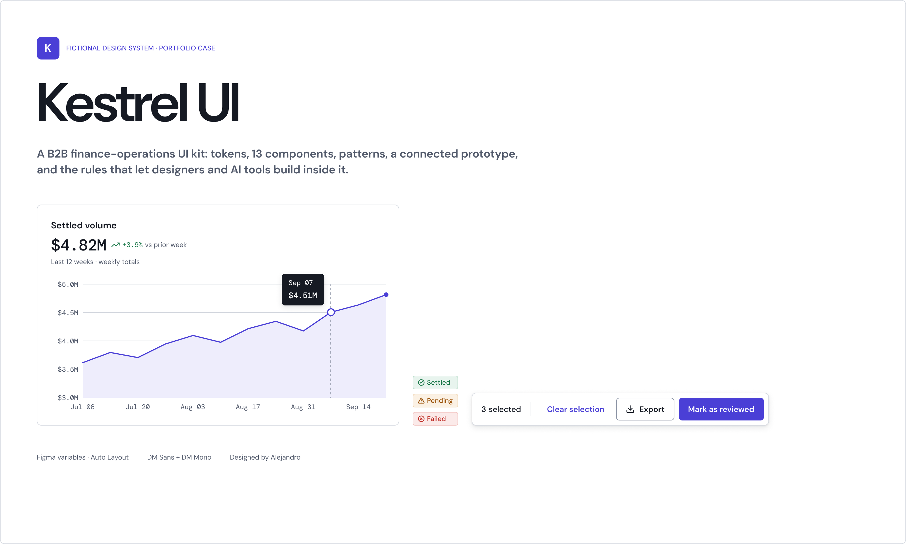
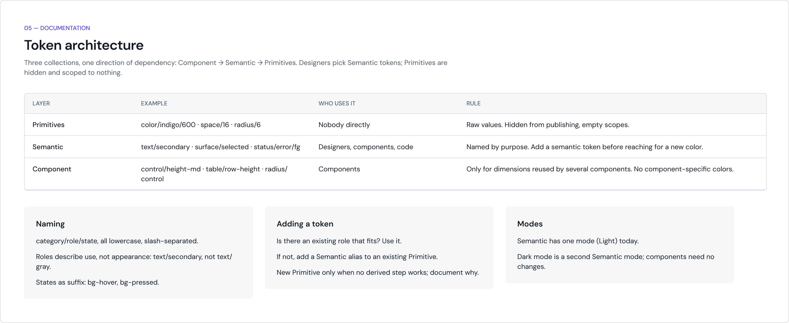
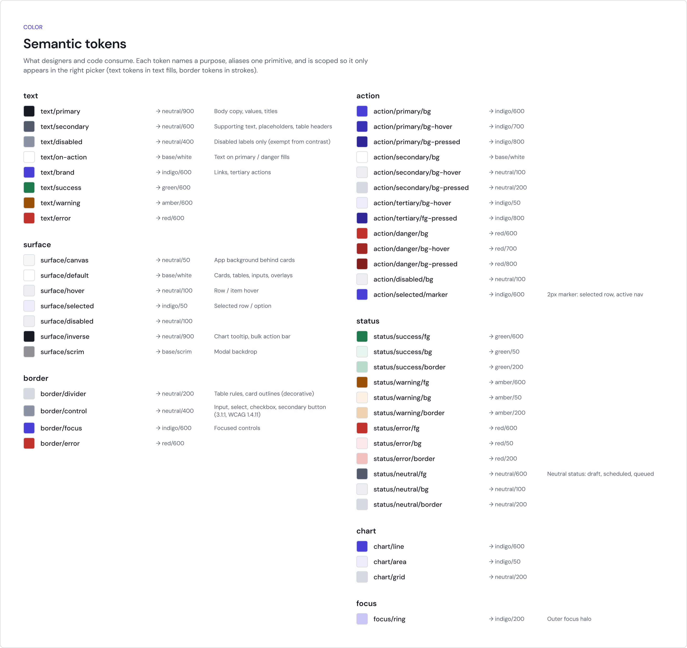
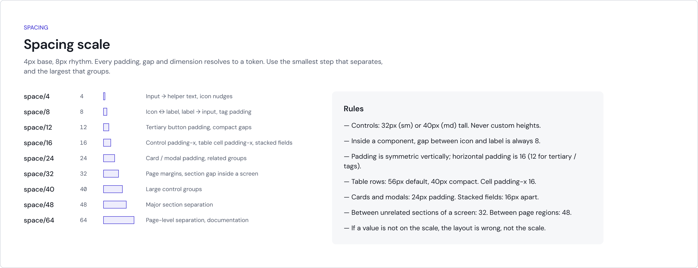
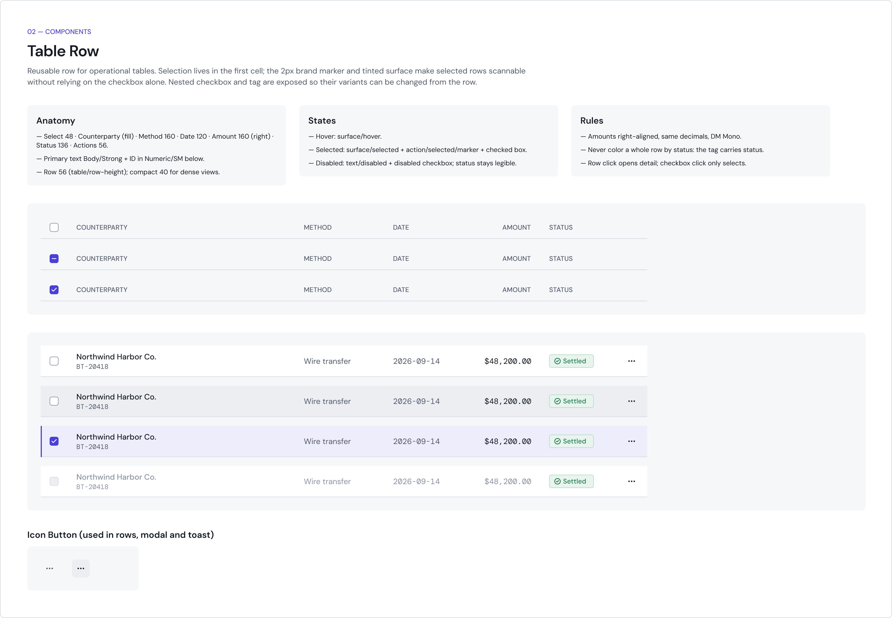
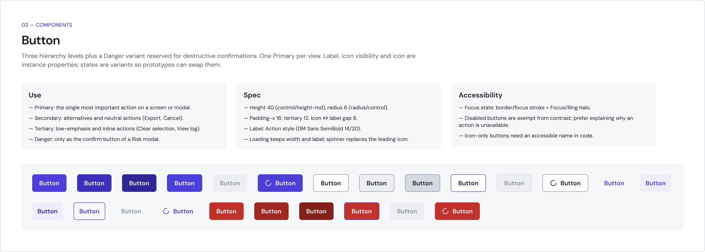
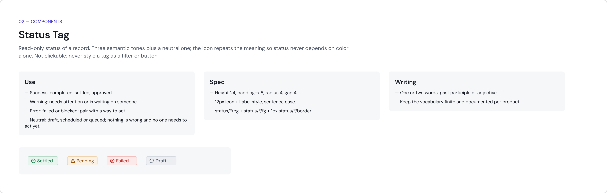
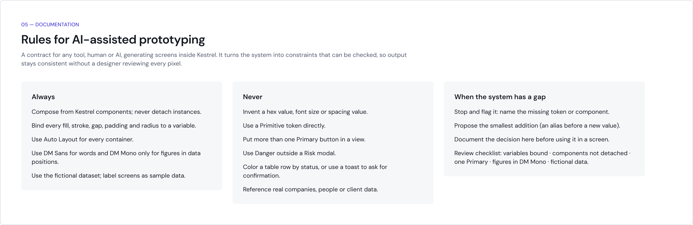
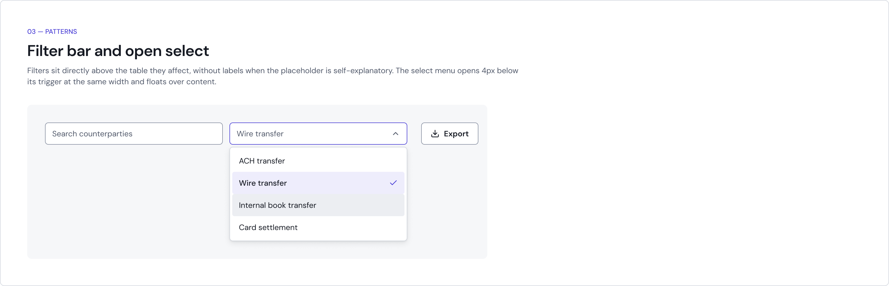
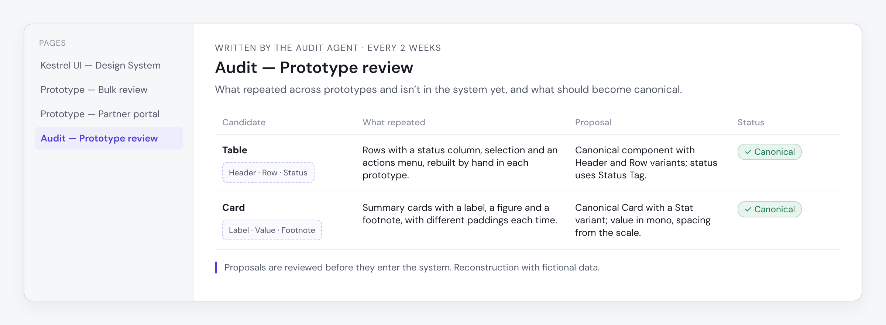

Construir un design system desde cero y luego enseñarle a la IA a seguirlo
Construí desde cero el design system de una empresa de crédito, lo implementé con ingeniería como librería en código y después lo convertí en el reglamento para prototipar con IA.
- Rol
- Primer product designer in-house
- Equipo
- 2 diseñadores, ~8 ingenieros
- Periodo
- 2022–2026
- Herramientas
- Figma, Storybook, Chromatic, Jira, Claude, Claude Design
Los visuales son reconstrucciones hechas con Kestrel UI, una marca ficticia con datos ficticios. Muestran los principios del trabajo, no las pantallas reales de la empresa.


Contexto
Cuando entré a Camino Financial, hoy Quantum Lending Solutions, no había diseño de producto in-house ni un sistema compartido. En los años siguientes, el sistema tuvo que servir a tres tipos de producto: una plataforma interna de servicing para los equipos de operaciones y underwriting, un portal para PyMEs acreditadas y un portal para partners de crédito.
Mi rol
Fui el primer product designer in-house de la empresa, y no existía un design system. Construirlo, implementarlo con ingeniería y auditarlo, de principio a fin, fue mi responsabilidad. Definí cómo se pasa el trabajo entre diseño e ingeniería y me convertí en el aprobador visual formal de los cambios de front-end en Chromatic. En 2026, junto con mi compañero de diseño, rediseñé nuestro proceso alrededor de la IA.
El problema
Diseño e ingeniería no compartían componentes, y el handoff dependía de conversaciones dispersas en lugar de un proceso claro. Años después apareció un problema nuevo: las herramientas de IA generaban pantallas rápido, pero nada les impedía inventar componentes, colores o espaciados fuera del sistema.
A quién servía el sistema
Diseña y prototipa con el kit.
“Cuando empiezo una pantalla nueva, quiero componentes y tokens confiables, para no reinventar lo que ya existe.”
Frustración: diseño e ingeniería no compartían componentes.
Construye los componentes en la librería en código.
“Cuando construyo un componente, quiero su anatomía y estados documentados, para que el código coincida con el diseño sin idas y vueltas.”
Frustración: el handoff dependía de conversaciones dispersas.
Revisa iteraciones y decide qué avanza.
“Cuando una funcionalidad todavía se está definiendo, quiero ver una primera iteración pronto, para dar feedback sobre algo que realmente se pueda construir.”
Frustración: un primer diseño tomaba cerca de una semana (estimación mía).
Formato JTBD: cuando [situación], quiero [motivación], para [resultado esperado].
Retos clave
| Reto | Descubrir | Definir · HMW | Desarrollar | Entregar |
|---|---|---|---|---|
| Sin componentes compartidos | Feedback de ingeniería: no había componentes compartidos y el handoff dependía de conversaciones dispersas. | ¿Cómo podríamos darles a diseño e ingeniería una sola fuente de verdad? | Primero tokens, luego componentes documentados, construidos por ingeniería como librería en código; Chromatic como filtro de aprobación. | Una sola librería en código para todos los productos |
| La marca de cada partner | Requerimientos de producto: el portal para partners debía llevar la marca de cada partner. | ¿Cómo podríamos aplicar la marca de cada partner sin duplicar componentes? | Tokens de marca coordinados con ingeniería: cada partner define su color primario y su logo. | La marca cambia sin romper componentes ni contraste |
| IA fuera del sistema | Revisión de prototipos generados con IA: las pantallas salían rápido, pero con componentes, colores y espaciados inventados. | ¿Cómo podríamos dejar que la IA prototipe rápido sin salirse del sistema? | Claude y Claude Design conectados al UI Kit, con reglas verificables; todo lo nuevo se documenta primero. | Tareas de ~1 semana a 2–3 días (estimación mía) |
| Un sistema que se queda atrás | Auditorías de prototipos: se repetían patrones entre prototipos que no estaban en el sistema. | ¿Cómo podríamos mantener el sistema al día mientras los equipos construyen cosas nuevas? | Un agente de Claude audita los prototipos cada 2 semanas y documenta candidatos a canónicos en el archivo de Figma. | Tablas y cards se volvieron canónicas |
Proceso y decisiones
Fundamentos antes que componentes
Empecé por los tokens y las variables, para que cada componente heredara las mismas decisiones en lugar de repetirlas.






La marca de cada partner, como capa de tokens
El portal para partners debía llevar la marca de cada partner. El white-label vivía en los tokens de color y marca del sistema, que coordiné con ingeniería: cada partner definía su color primario y su logo, y el portal los aplicaba sin romper componentes ni contraste. Solo se usó en el portal para partners, que cuento en el tercer caso de estudio.

Blueprints con los que ingeniería podía construir
Los componentes venían con documentación y blueprints, e ingeniería los implementó como una librería en código usada en todos los productos.






Un filtro, no una sugerencia
Ningún cambio visual llegaba a producción sin revisión en Chromatic. La consistencia dejó de depender de la memoria.
De diseño a producción
- FigmaSe diseña con los componentes y tokens del kit
- StorybookIngeniería construye el componente en código
- Revisión en ChromaticAprobación visual de diseño
- MergeLlega a todos los productos
Un proceso que cuenta con la IA
Nuestro flujo pasó de cuatro etapas a seis, sumando exploración con IA y feedback estructurado antes de la primera iteración real.
El proceso, antes y después
Antes
- Por hacer
- En progreso
- En revisión
- Terminado
Después
- Por hacer
- Exploración IA
- En feedback
- Primera iteración
- En revisión
- Terminado
Una sola fuente de verdad para la IA
Configuramos Claude y Claude Design para prototipar solo con los componentes, tokens y variables del UI kit. Si de verdad se necesitaba algo nuevo, primero había que documentarlo y luego revisarlo para el sistema.




Un sistema que se mantiene al día
Conecté el Claude Design de la organización al sistema, así las primeras iteraciones llegaban a los stakeholders en 2–3 días y luego se refinaban en Figma. Cada 2 semanas, un agente de Claude que configuré auditaba nuestros prototipos, documentaba lo que se repetía y proponía qué debía volverse canónico. Su resultado era una página de documentación dentro del archivo de Figma auditado.
Del kit a los stakeholders, y de vuelta al kit
- UI KitTokens y componentes, librería en código
- Claude DesignConectado al sistema: primera iteración en 2–3 días
- StakeholdersFeedback temprano sobre algo tangible
- FigmaDetalle fino y prototipo final
- Agente de auditoríaCada 2 semanas: qué debe volverse canónico


Resultados
- Una sola librería en código para todos los productos, con aprobación visual en Chromatic.
- Las tablas y las cards entraron al sistema gracias al agente de auditoría, así el kit siguió el ritmo de lo que los equipos realmente construían.
- Las tareas típicas de diseño pasaron de cerca de una semana a 2–3 días (estimación mía).
- Mi Director de Producto destacó que el equipo podía prototipar sin esperar a que diseño tuviera capacidad.
Cómo lo mediría
Propuesta, no ejecutada en el proyecto
Del ticket a la primera iteración mostrada a stakeholders, antes y después de la exploración con IA.
Porcentaje de pantallas de prototipo construidas solo con componentes canónicos, tomado de cada auditoría.
Desde la primera auditoría que detecta un patrón repetido hasta su release en la librería en código.
Haría diferente
Mediría el tiempo de ciclo desde el primer día. El proceso claramente se aceleró, pero solo puedo dar una estimación, no una cifra.
Siguiente caso de estudio